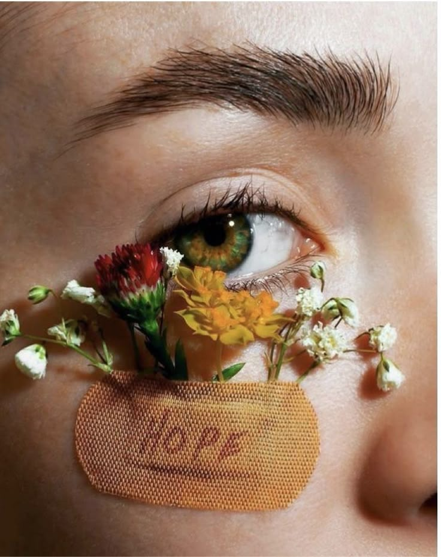

JULY 22, 2025
This is an addition
Tears, though born of pain, often water the fragile roots of hope.
In their silent fall, they soften the soil of the heart, making room for growth where despair once reigned.
Each drop, a quiet surrender, nourishes resilience—reminding us that even in sorrow, something beautiful can still rise.